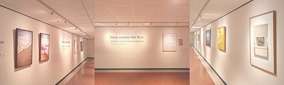

Kunst trekt je aandacht en geeft je iets om even in te verdwijnen, precies wat je nodig hebt als je hoofd al vol zit. Onderzoek toont aan dat even kijken naar kunst je stresshormoon merkbaar verlaagt en je lichaam tot rust brengt. In Zuyderland hangen tientallen werken verspreid door het gebouw, elk met een eigen sfeer, kleur en verhaal. Kunst helpt je om even buiten jezelf te treden, de tijd te vergeten en de wachtkamer te zien als meer dan een plek om te wachten. Op deze pagina ontdek je de collectie en lees je wat het met je doet.
In Zuyderland hangen tientallen kunstwerken verspreid door het gebouw, van schilderijen tot fotografie en beeldhouwwerk. Voor dit project hebben we de collectie onderzocht en gekeken wat de kleuren en sfeer van elk werk psychologisch met je doen. Blauw kalmeert de hartslag, groen geeft een gevoel van balans en herstel, warm oranje brengt energie en warmte. Op deze pagina ontdek je de werken, lees je wat ze met je kunnen doen en vind je de locatie zodat je ze na je afspraak zelf kunt opzoeken.
Wachten in een ziekenhuis voelt voor veel mensen als een periode van angst en onzekerheid. Onderzoek laat zien dat kleine afleidingen en rustmomenten die spanning direct kunnen verminderen. Kies hieronder wat het beste bij jou past.
Tekenen heeft een bewezen rustgevend effect op lichaam en geest. De kleuren op deze canvas zijn gekozen op basis van onderzoek naar kleurenpsychologie. Kies een kleur die past bij hoe je je voelt en teken even los.
Je ademhaling is een van de snelste manieren om je zenuwstelsel te kalmeren. Door je ogen te volgen langs een lijn of cirkel terwijl je bewust ademt, daalt je hartslag en voel je je minder gespannen.